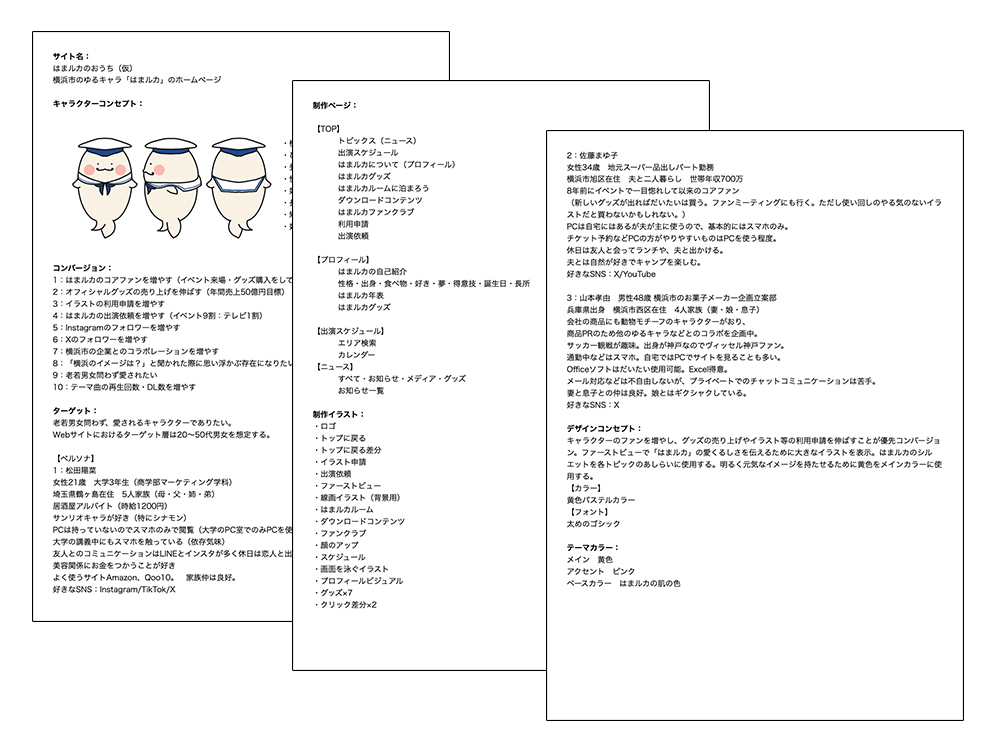
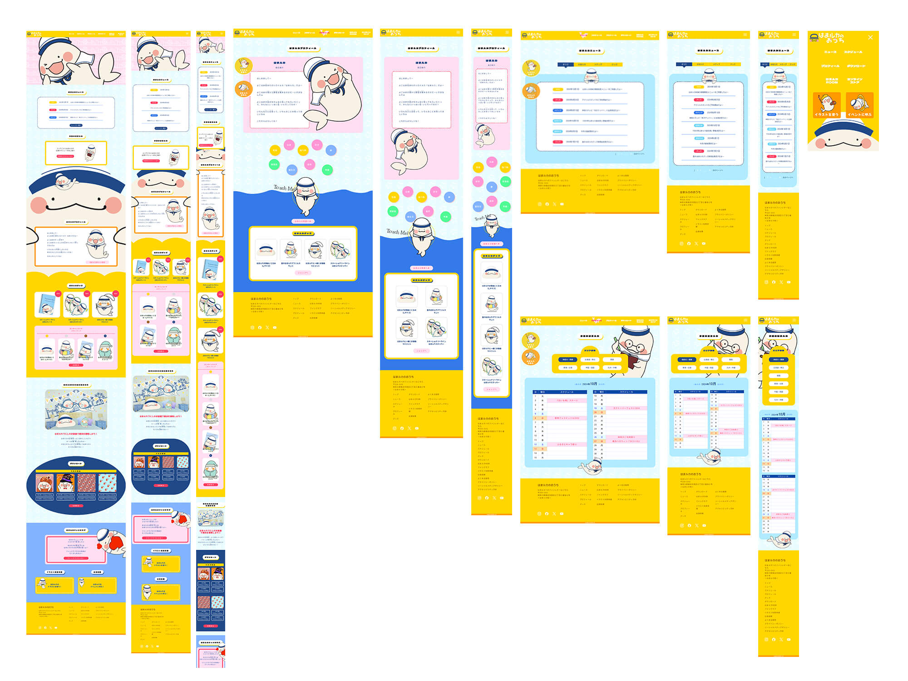
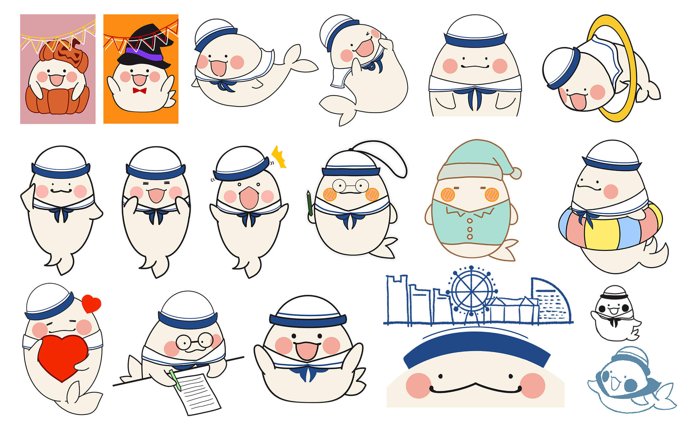

キャラクター概要
横浜出身のシロイルカ「はまルカ」。ひとなつっこく明るい性格で、のんびりやさん。登場から10周年を迎え、多くの人に愛されてきた。横浜と言えば「はまルカ」と思い浮かべられる存在になるべく様々な企業とのコラボレーションもする。
制作期間
2024年08月29日～2024年10月01日
作業範囲
- 企画・情報収集(5h)
- コンセプトシート(5h)
- ワイヤーフレーム(8h)
- 文書作成(1h)
- 画像処理(5h)
- デザインカンプ(5h)
- HTML(4h)
- SCSS(27h)
- レスポンシブ対応(15h)
- イラスト制作(10h)
- ロゴ制作(2h)
企画書

サイトマップ

サイトの目的
- 1.はまルカのコアファンの増加
- 2.オフィシャルグッズの売り上げを伸ばす
- 3.イラストの利用申請・出演依頼の増加
ターゲット
老若男女問わず愛されるキャラクターでありたいが、Webサイトにおけるターゲット層は20～50代男女を想定する。特に女性に向けたグッズラインナップを想定。
ペルソナ
-
松田陽菜(女性21歳/大学3年生(商学部マーケティング学科)/居酒屋アルバイト)
埼玉県鶴ヶ島在住/5人家族(母・父・姉・弟)
サンリオキャラが好き(特にシナモン)。PCは持っていないのでスマホのみで閲覧。大学の講義中にもスマホを触っており依存症気味である。友人とのコミュニケーションはLINEとインスタが多く休日は恋人と出かけることが多い。美容関係にお金を使うことが好き。
よく使うサイト:Amazon、Qoo10
好きなSNS:Instagram/TikTok/X
-
佐藤まゆ子(女性34歳/地元スーパー品出しパート勤務/世帯年収700万)
横浜市旭区在住/夫と二人暮らし
はまルカに8年前にイベントで一目惚れして以来のコアファン。新しいグッズが出ればだいたいは買う。ファンミーティングにも行く。ただし使い回しのやる気のないイラストだと買わないかもしれない。PCは自宅にはあるが夫が主に使うので、基本的にはスマホのみ。チケット予約などPCの方がやりやすいものはPCを使う程度。休日は友人と会ってランチや、夫と出かける。夫とは自然が好きで共にキャンプを楽しむ。
良く使うサイト:Amazon、楽天市場
好きなSNS:X/YouTube
-
山本孝由(男性48歳/横浜市のお菓子メーカー企画立案部)
兵庫県出身/横浜市西区在住(4人家族(妻・娘・息子))
会社の商品にも動物モチーフのキャラクターがおり、商品PRのため他のゆるキャラなどとのコラボを企画中。サッカー観戦が趣味。出身が神戸なのでヴィッセル神戸ファン。通勤中などはスマホ。自宅ではPCでサイトを見ることも多い。Officeソフトはだいたい使用可能。Excel得意。メール対応などは不自由しないが、プライベートでのチャットコミュニケーションは苦手。妻と息子との仲は良好。娘とはギクシャクしている。
良く使うサイト:Yahoo! JAPAN
好きなSNS:X
デザインカンプ

デザインについて
全体のコンセプト
キャラクターのファンを増やし、グッズの売り上げやイラスト等の利用申請を伸ばすことが優先コンバージョン。ファーストビューで「はまルカ」の愛くるしさを伝えるために大きなイラストを表示。明るく元気なイメージを持たせるために黄色をメインカラーに選定。
カラー
メインカラーは黄色を使用するが、補色でありキャラクターの服装にも使用している紺色・青も多めに使用することで画面を引き締める。アクセントカラーとして濃いピンクを文字や文字の背景色として使用。
フォント
タイトル部分などには太めのゴシック体を選定。キャラクターのセリフになる部分は丸ゴシックを使用して柔和な印象を持たせる。スッキリ見せる部分を作るため数字が多い部分などは欧文フォントも使用。
制作イラスト一覧

コーディングについて
CSSキーフレームやjQueryの使用で、画面上を上下したり左右に動きを持つアニメーションを実装。クリックでイラストが変化する動きも実装することでキャラクターのファンはもちろん新規ファンを喜ばせることを第一に考え制作。